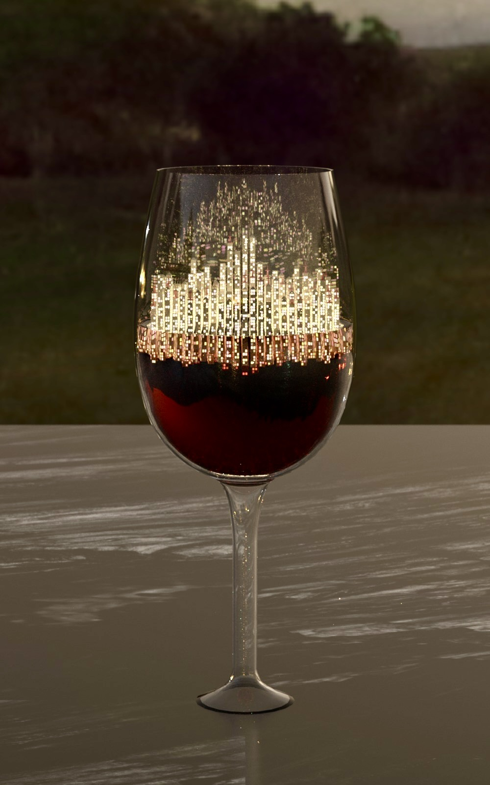
This is my offline renderer for the Computer Graphics course project at ETH, aiming at implementing and investigating physics-based rendering algorithms, with rigorous validation to show correctness of the selected features. It is based on Nori, an educational rendering framework.
It supports features including:
- Light transport algorithms:
- Path tracing with multiple importance sampling.
- Photon mapping.
- Homogeneous and heterogeneous participating Media:
- Spectrally varying scattering coefficients.
- Reading 3D volume density grid from NanoVDB files.
- Trilinear interpolation of grid density.
- Ratio tracking for transmittance evaluation.
- Importance sampling of volumetric emission.
- Henyey-Greenstein phase function.
- Images as textures with bilinear interpolation.
- Denoising:
- Materials:
- Diffuse, mirror, and dielectric BSDFs.
- Microfacet BSDF.
- Disney BSDF.
- Stratified sampler.
- Resampled importance sampling.
- Depth-of-field camera.
- Procedural generation of a night city scene.
Note: due to permission issues from the course side, we are not allowed to open source the code for now. This page only demonstrates the result and project report.
Motivation
Our final submission is a surreal scene where a modern city is surrounded in a tiny wine glass, creating an abrupt contradiction of
the seemingly enormous human civilization and its narrowness in a grander universe.
We wish to convey the message that human beings, intelligent and sophisticated as they think, might ultimately be a rather simple and humble
form of living from a perspective of a greater civilization in a higher dimension. The so-called science discoveries, technology advancements,
and complications of urban lives, could in reality be nothing but a simulation of "brain in a vat".
Feature Validation and Report
Volume Rendering with Multiple Importance Sampling
Demo
Our volume path tracer can handle homogeneous/heterogeneous media of arbitrary bounding shapes, with or without emission. It is validated against
Mitsuba and verified against normal path tracer (in the case of zero scattering coefficients), thus proven to be unbiased.
MIS is supported.
Our volume path tracer can even handle the case when scattering coefficients of the media are spectrally varying, i.e.
when \(\sigma_t\) has different RGB components, illustrated in the validation.
Cornell Box scene with a global fog-like medium and a bunny-shaped smoke-like medium:
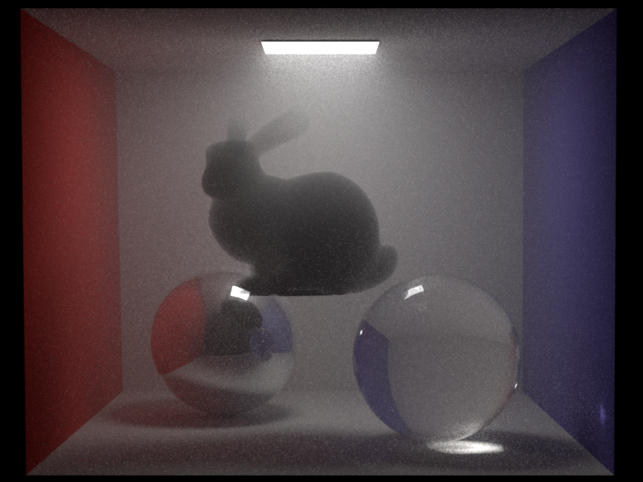
Cornell Box scene with smoke-shaped heterogeneous medium:
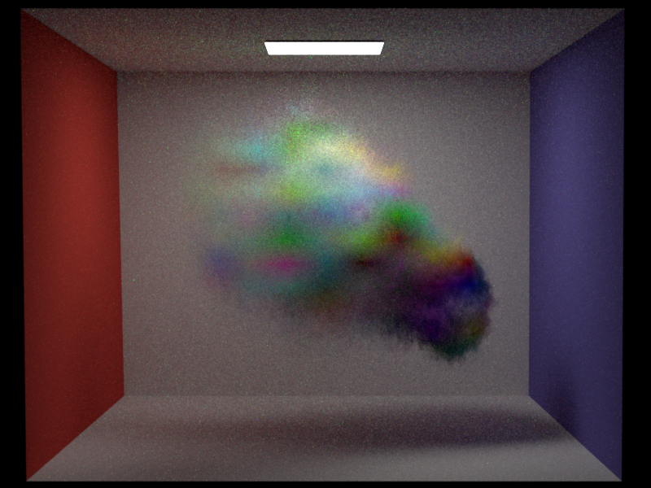
Technical Details
The naive implementation (material sampling, MATS) follows the pseudocode in the lecture. It is easily unbiased, compared to Mitsuba.
Basically we keep track of the ray's current media and goes to surface interaction or volume interaction cases depending on both
this variable and the free flight distance.
A novel MIS version that performs the emitter sampling whether inside or outside the (single or nested) media is also implemented, and
proven to unbiased and more efficient than normal MATS version.
Unlike Mitsuba3 that does multiple ray intersection tests in a single EM sample,
we designed a tailored ray intersect interface(scene.h/rayIntersectThroughMedia) that handles multiple media boundary
intersections in a row, and
returns the throughput on the fly. This is also tested to be very efficient both in terms of runtime and noise.
Some state variables for the previous intersection are stored to compute the pdf of the MAT sample and the MIS weight correctly.
To describe the media's boundary, we store the exterior and interior media pointers of a shape/emitter, in the hope that the user (artist)
can guarantee the consistency of media change (e.g., different ray samples that end up traveling in the current volume
should always have the same media state).
Change of media is handled only when we sample the transmission lobe of the BSDF.
Validation
Constant media case (2048spp).
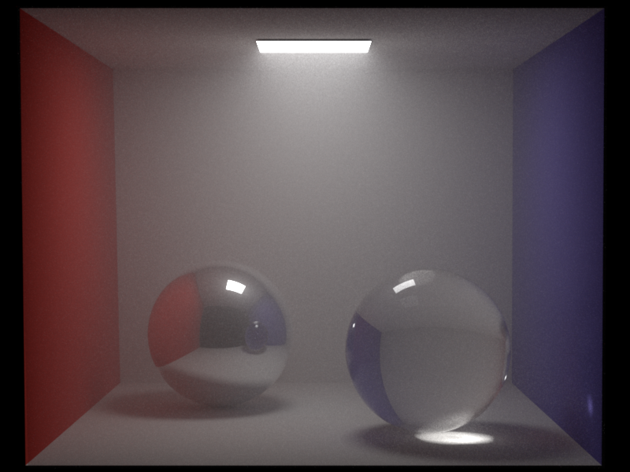
Spectrally varying media case (2048spp).
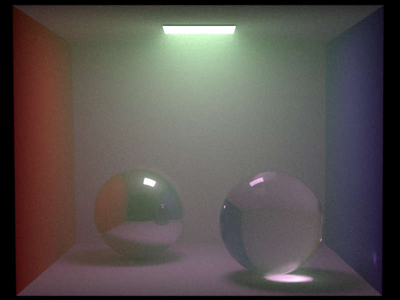
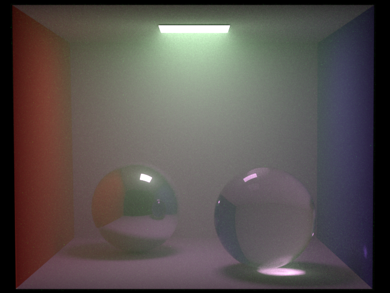
Comparing MIS with MATS (128spp) (the left and right "spheres" are now a bunch of media)
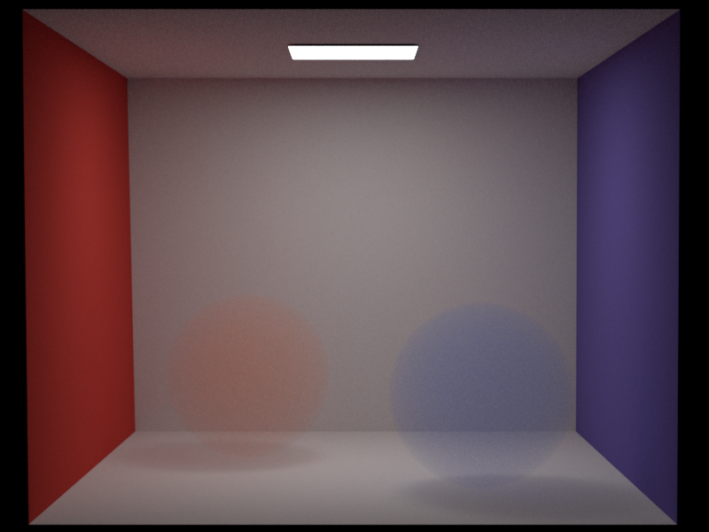
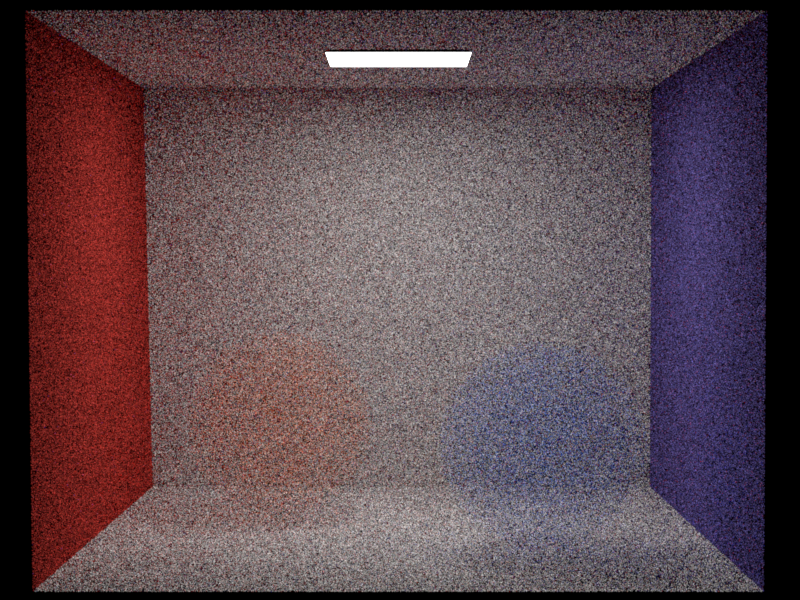
One can see the significant variance improvement of MIS over MATS. Besides, we also proved its unbiaseness by
computing the mean error in Tev.
Anisotropic Phase Function
Demo
Henyey-Greenstein phase function is implemented to describe anistropic scattering, which supports the average cosine parameter in the range \(-1 \le g \le 1\).
Please see the validation section for the feature demo.
Technical Details
Implementing a phase function is three folds: eval, sample, and pdf. What's simpler than that of the BSDF is we always
exactly sample the phase function, which means pdf equals eval.
Implementing eval is straightforwardly following the formula, whereas sample needs us to do the integral of the phase
function by hand and warp using sqrt, sin, cos functions etc.
Validation
Verification with isotropic phase function at g = 0 (512spp).

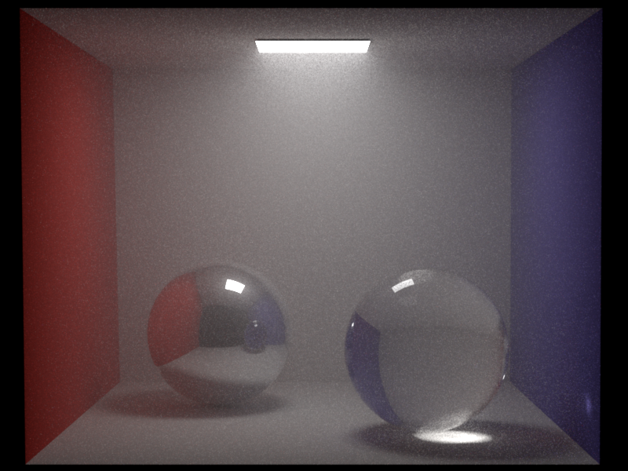
Comparison with Mitsuba 3 (512spp).
Our scene1,
Our scene2;
Mitsuba scene1,
Mitsuba scene2;
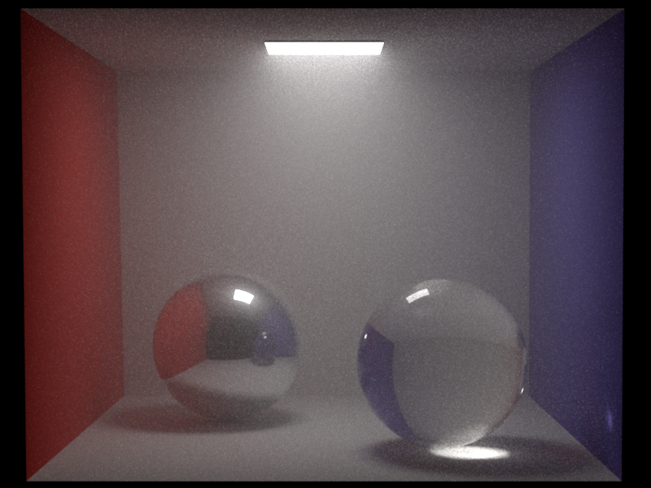

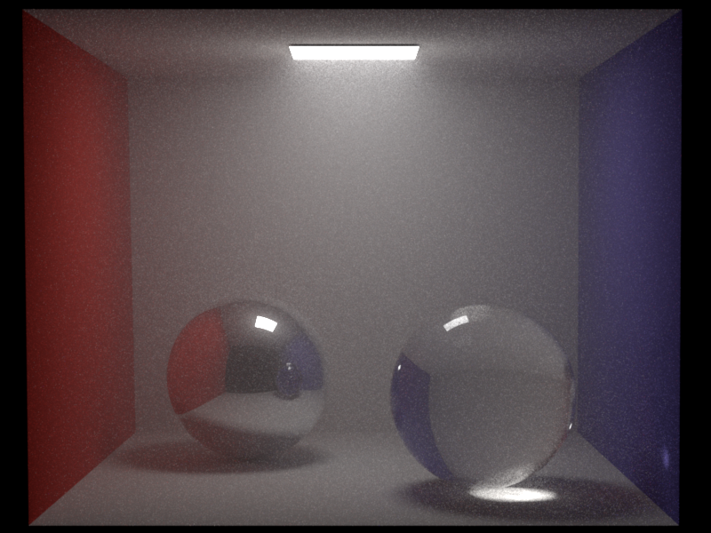
Images as Textures
Demo
We allow the user to specify an image from the disk as an albedo texture for the diffuse and principled BSDFs.
Multiple formats (LDR, HDR, and EXR) are supported. As a proof of concept, only repeating wrap mode is implemented.
We implemented two types of filters: nearest and bilinear interpolation.
Please see the validation section for the feature demo.
Technical Details
First we improved the Bitmap class a bit, by adding the readHDR and readLDR functions, using
the external library stb_image.h.
In the texture's eval function, one just transforms the UV to the image space and queries the image value at the rounded
indices, or 4 neighboring indices using bilinear interpolation.
Validation
Comparing bitmap texture with checkerboard texture.
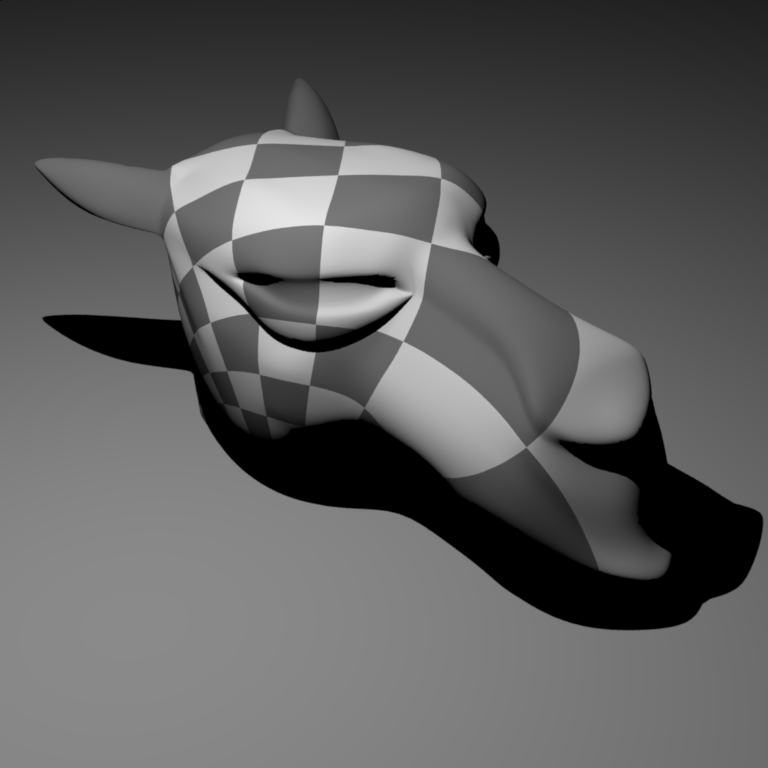

Comparison with Mitsuba 3.
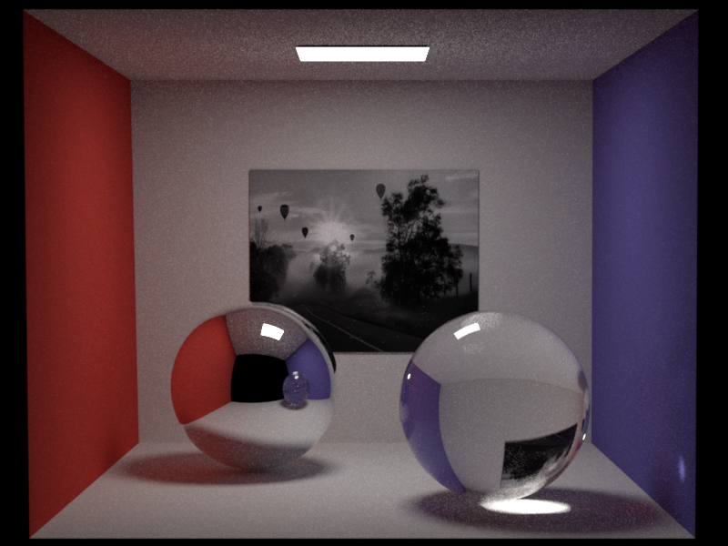
Bilateral Denoising
Demo
Two bilateral-filter-based denoisings are implemented: simple bilateral filter using color and variance, and
joint bilateral filter using auxiliary feature buffers (see the forth section).
For the simple bilateral denoiser, two user-defined parameters are accepted: one for the pixel space distance scale
\(\sigma_s\), and another for the color space's \(k_s\).
House scene, AV renderer. Here we showcase the improvement of applying a denoiser compared to the noisy input and reference.
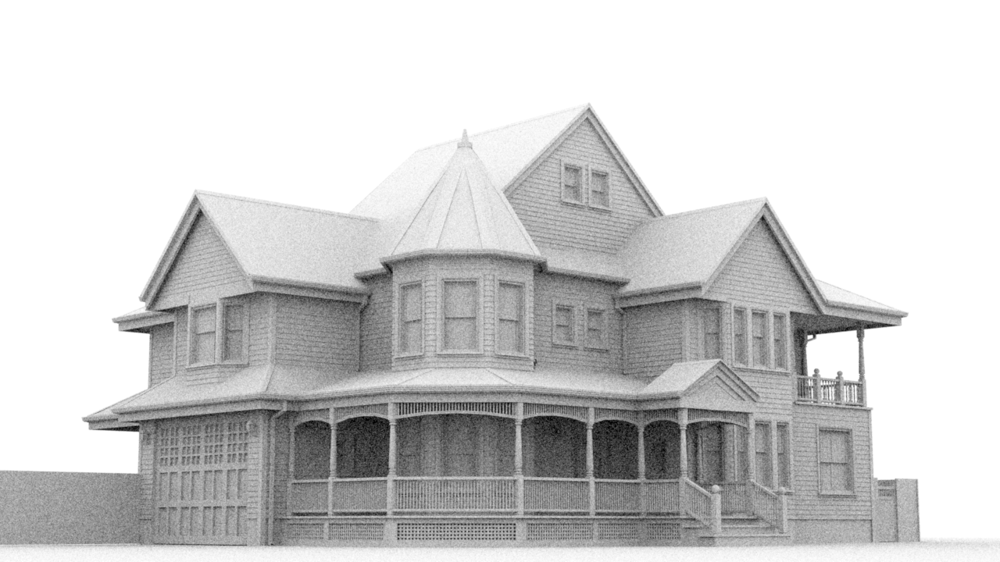
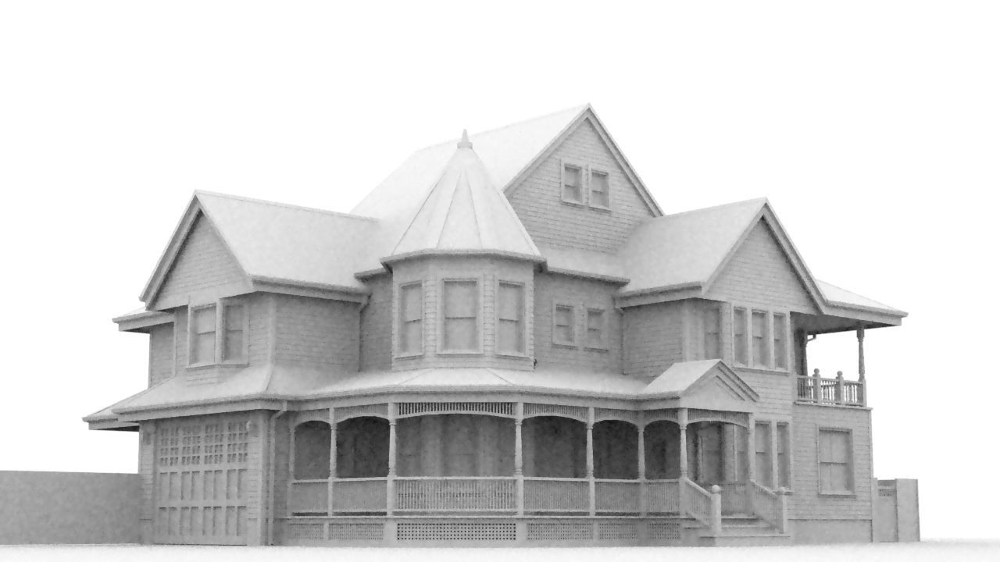
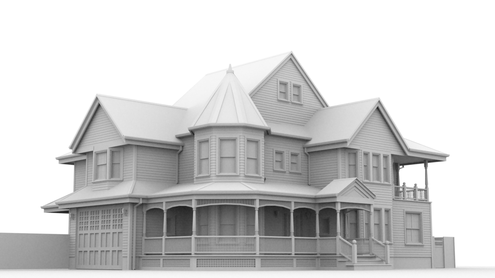
Cornell Box scene, path tracing. Showcasing the improvement of applying a denoiser compared to the noisy input and reference.
One can see that our simple denoiser produces smoother results than the noisy inputs, yet suffering from some artifacts such
as over-blurring or deforming the high-frequency regions in the rendering. Hence, trading off blurring (\(\sigma_s\)) and
keeping (\(k_s\)) plays a vital role.
Technical Details
Since different denoisers use different buffers, we changed the rendering pipeline in main.cpp so that the
collection process of variance and auxiliary feature buffers can be done simultaneously as the primal rendering goes on.
To compute the empirical variance, we store the mean and mean of the second momentum of radiance to two
other ImageBlock, every time the integrator
returns an Li.
For reusability, a new wrapper class MultiBufferBlock was created, in block.h.
To avoid the unwanted reconstruction filter and reuse the framework code, a static box filter instance is
passed in to the MultiBufferBlock for reconstructing variance and feature buffers.
For the bilateral denoiser, it simply iterates through all pixels p, then collects all its neighbors q's bilateral
weight and contribution, and finally normalizes pixel p.
The weighting kernel is simply the exponential pixel space squared distance multiplied by the exponential of
color space squared distance, which exploits the empirical variances of both pixel p and q.
Validation
One interesting doubt is why we need to use the two-pixel variance, suggested in the lecture:
$$d^2(p, q)=\frac{(u(p)-u(q))^2-(\operatorname{Var}[p]+\min (\operatorname{Var}[q],
\operatorname{Var}[p]))}{\epsilon+k^2(\operatorname{Var}[p]+\operatorname{Var}[q])}$$
than just the variance at pixel p, or even a constant user-defined value \(\sigma_c\).
To verify our two-pixel variance is better, we did the following test:
Cornell Box scene, comparison with different filter kernels.
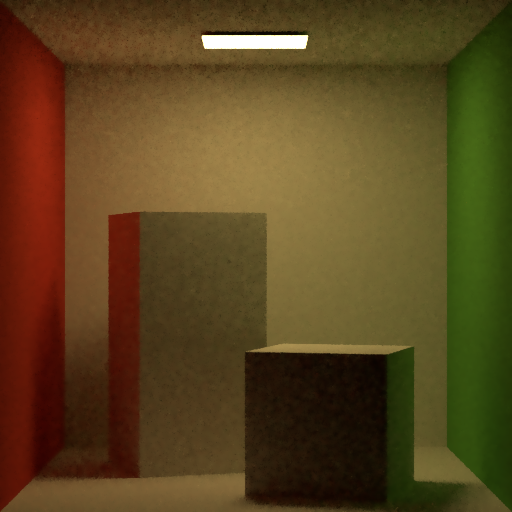
As you can see, the constant variance treats the color kernel uniformly, causing over-blurs everywhere.
Exploiting one-pixel or two-pixel variance greatly helps the denoiser to determine which pixel contributes more.
However, in our naive scene, differences between the latter ones are subtle.
Joint Bilateral Filter with Auxiliary Feature Buffers
Our integrator is able to collect auxiliary features on the fly.
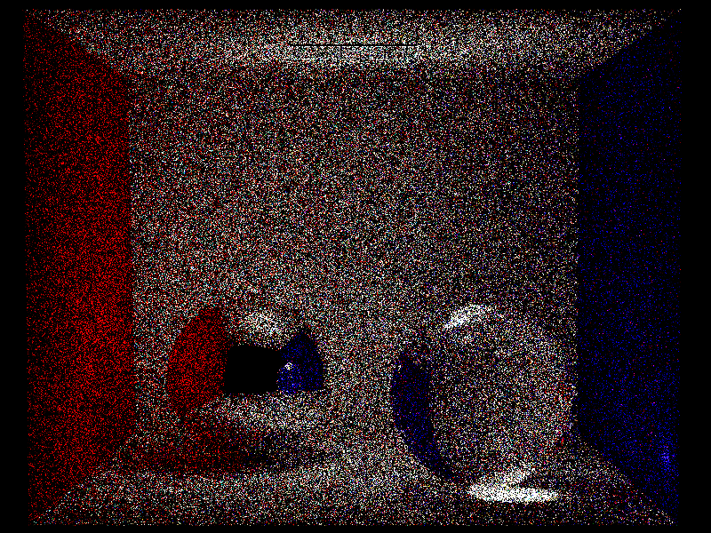
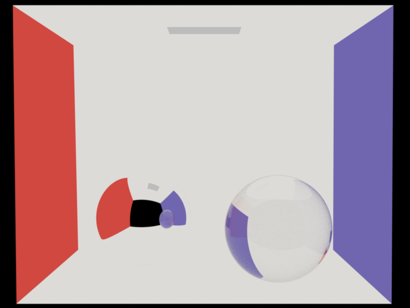
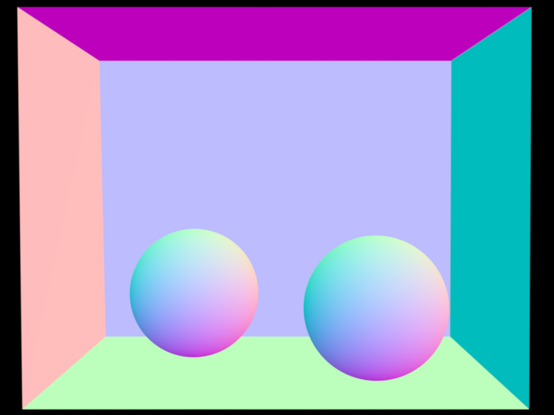
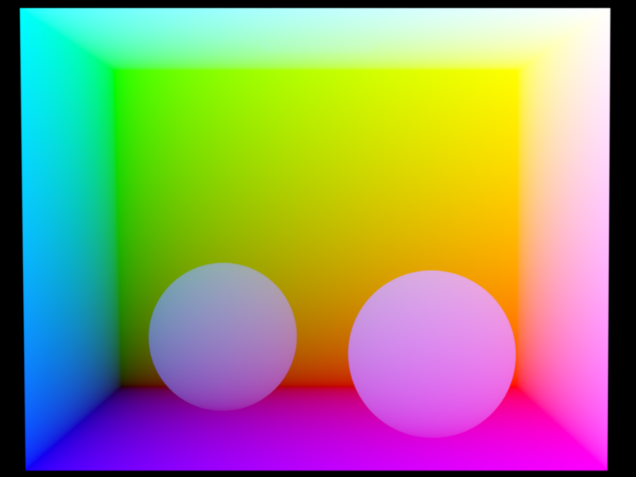
With the help of these auxiliary buffers, the denoiser can find smarter ways to reduce the noise while preserving important visual cues.
Cornell Box Scene, Comparing joint bilateral filter with bilateral filter
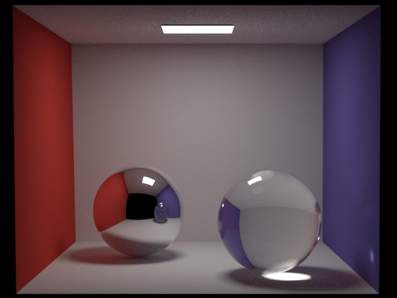
Disney Principled BSDF
Demo
We provided 6 user-set parameters for our principled BSDF: albedo (aka. base color, can be textured),
metallic, specular (equivalent to relative IOR), roughness, sheen, and subsurface (aka. flatness, or fake subsurface).
Our result aligns with Mitsuba3.
A diffuse case (32spp)
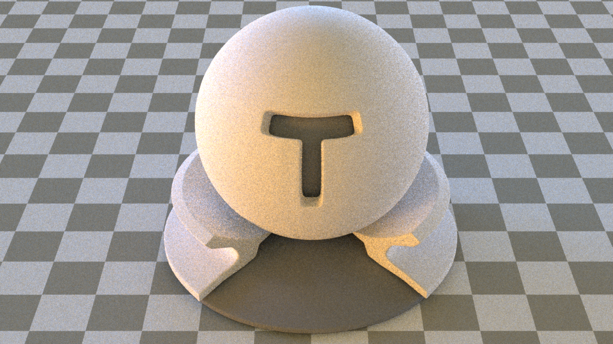
Multiple specular cases. Multiple Material Testballs (32spp), (metallic, specular) from left ball to right ball:
(0.01, 0.01), (0.95, 0.01), (0.05, 0.95), (0.99, 0.99).
Technical Details
Due to the mathematical complexity and rapidly changing conventions in rendering industry, we chose to follow and align
with only one reference renderer - Mitsuba3. A large part of the implementations were adapted from
their code base.
Since their principled BSDF depends on GGX microfacet model, we first refactored the code of our microfacet material and created a helper class to wrap the math of GGX and Beckmann distribution.
Implementing the eval function is straightforward, by computing some common parameters, and mixing in (in our case) the
diffuse, specular, subsurface, and sheen lobes.
Sampling is, however, more challenging and interesting. The naive way just samples the cosine hemisphere, similar to
the diffuse BSDF, which of course makes the specular case suffer.
A smarter would be to rewrite the eval formula into an linear interpolation between the specular and the diffuse
lobe, with a manually set parameter prSpecLobe. In the sample routine, we first draw a Bernoulli
random sample ~ prSpecLobe to decide which lobe to go into. Then, we return the importance BSDF,
with a scheme similar to microfacet BSDF.
Note that if we go to the specular lobe, importance will be divided by prSpecLobe, whereas in the diffuse lobe
it will be divided by 1 - prSpecLobe.
Now we need to come up with a heuristic for parameter prSpecLobe. We provided two options:
1. lerp(max(metallic, specular), delta, 1 - delta) where delta is very small to avoid div-by-zero issue
led by importance scaling;
2. (metallic + specular + metallic * specular) / (1 + specular + metallic * specular), as a simplified formula
inspired by Mitsuba's scheme.
The intuition is that the specular lobe contribution is related to both specular and metallic parameter.
Comparison of different sampling heuristics can be found here.
Validation
Various comparisons with Mitsuba are performed, with results listed as below.
Material Testball (32spp), diffuse case.
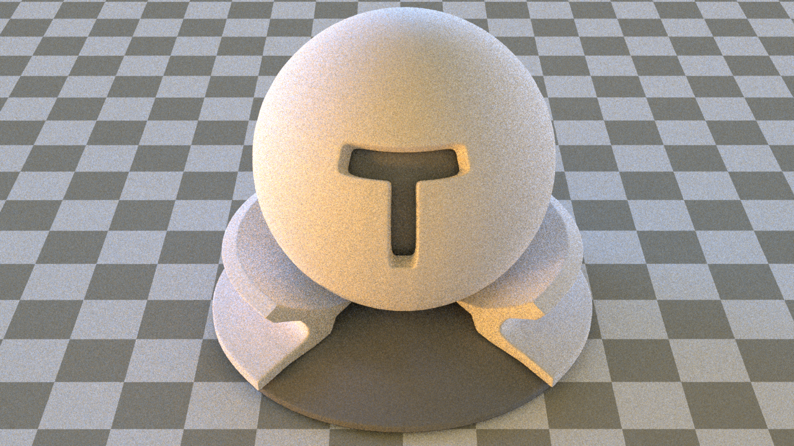
Material Testball (32spp), specular case.
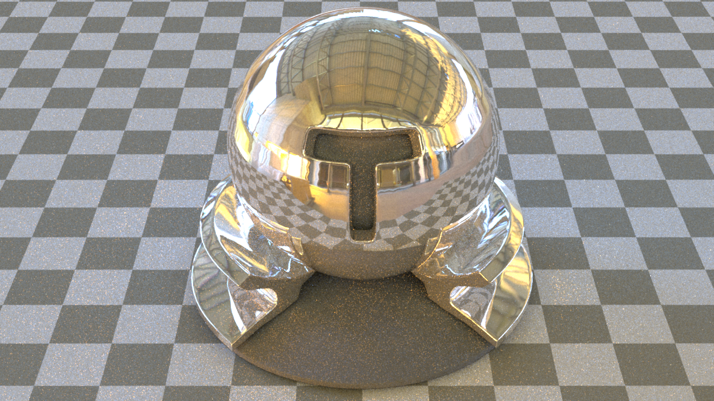
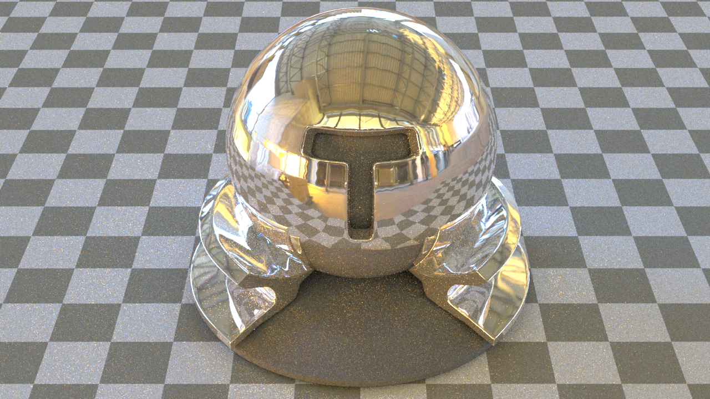
Note that the major difference is due to the environment map's coordinate convention.
Multiple Material Testball (64spp), various specular case. (metallic, specular) from left ball to right ball:
(0.01, 0.01), (0.95, 0.01), (0.05, 0.95), (0.99, 0.99).

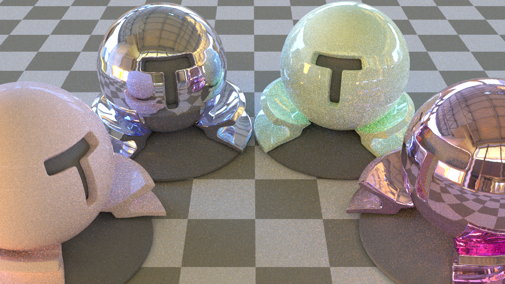
Multiple Material Testball (64spp), various sheen/subsurface case. (sheen, subsurface) from left ball to right ball:
(0.0, 0.1), (1.0, 0.1), (0.2, 0.0), (0.2, 1.0).
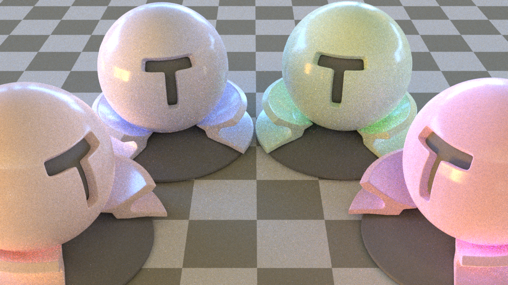
Multiple Material Testballs (32spp), comparing naive sampling with our two importance sampling heuristics.
(metallic, specular) from left ball to right ball:
(0.01, 0.01), (0.95, 0.01), (0.05, 0.95), (0.99, 0.99)
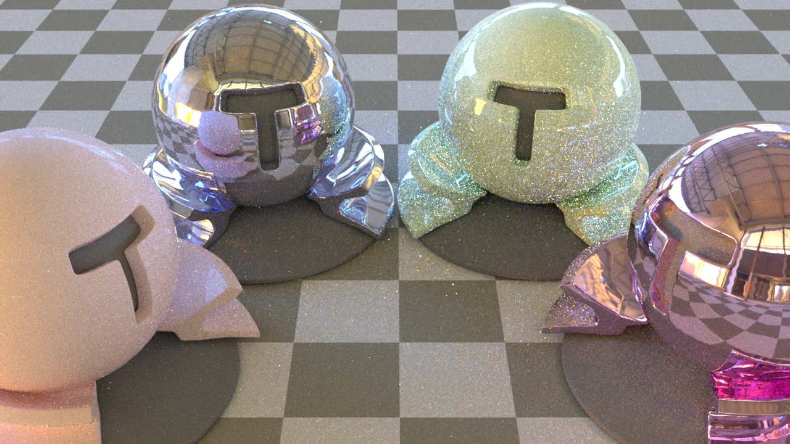
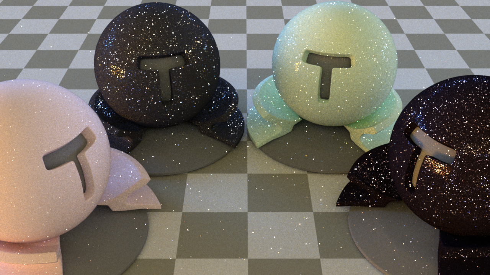
Naive suffers from severe noise due to the specularity of the BSDF. Heuristics 0 enjoys some improvement, but not robust
when metallic is small but specular is large. Heuristics 1 is better in general, with quality on par with Mitsuba's.
This concludes the robustness of our second sampling heuristics across different metallic/specular settings.
Stratified Sampling
Demo
Our stratified sampler takes a squared number sample count, systematically sample the 1D/2D space, and yields a lower-variance
Monte Carlo estimate.
Sphere Scene, direct, comparing against independent sampler (16spp).
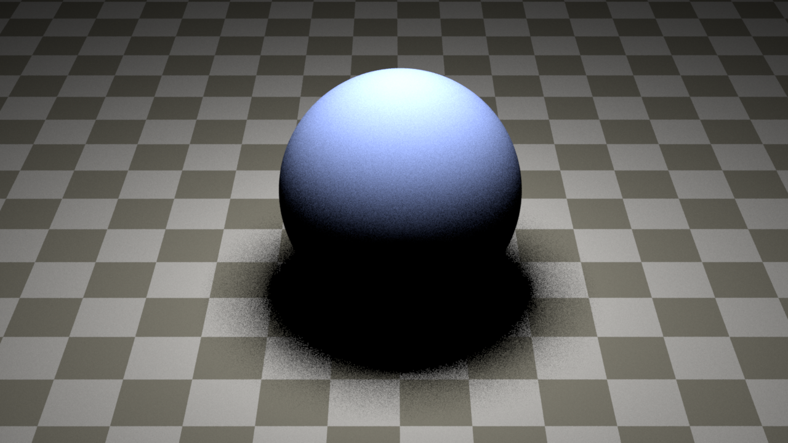
Table Scene, path MIS, comparing against independent sampler (64spp)
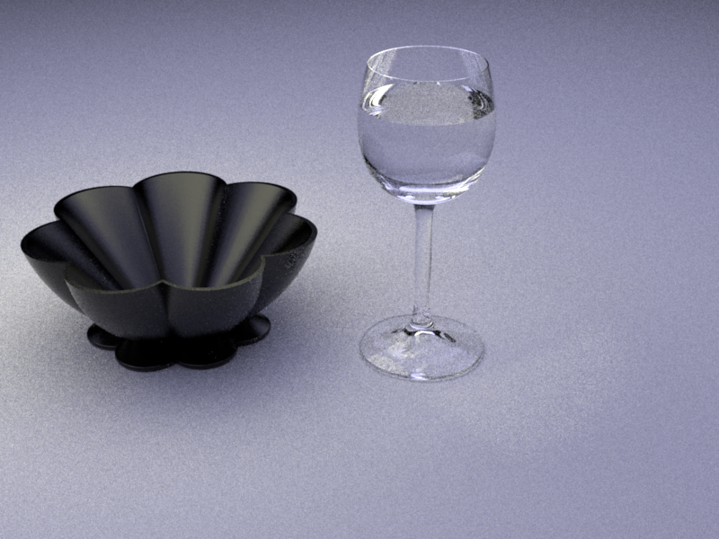
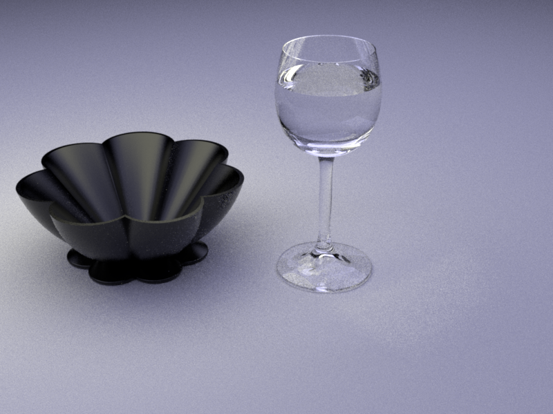
For simple integrators such as AV or Direct, the improvement is significant because the path space is small in dimensions,
making the stratified sampling easy. However, such "free-lunch" is gone in complex integrators like volume path tracer.
Technical Details
For the stratified sampler to work, we must extend the rendering pipeline so that generate() is called at
the beginning of rendering each pixel, and advance is called after each sample-per-pixel iteration.
Some variables are introduced to record the current sample space dimension and sample index.
Permutation of sample index over total sample count is first implemented using a 2D vector, mapping a dimension and a
sample index into a permuted index. Such mechanics must run dynamically because the sampler has no idea how many dimensions
will eventually be there in the integrator. The drawback is obvious-high cache miss rate and indirection cost.
An improvement was made, thanks to the pseudocode in the
Pixar's paper, such that the permutation can be encoded via an xor shift function. So the 2D vector is retired!
Procedural Generation
We craft the night city in the final scene by generating its scene file procedurally. The script instantiates building presets at locations on a grid, with random heights following Gaussian distributions, and random number of windows serving as light sources. It takes parameters such as number of buildings, height amplitude and frequency to make the generation process controllable. The city is inspired by this paper.
Minor Features
Twosided BSDF is created, inspired by Mitsuba, in which sides of the material share the same BSDF property.
Reflectance albedo for microfacet BSDF is introduced.
GGX distribution microfacet BSDF is supported, as a by-product of the principled BSDF feature.
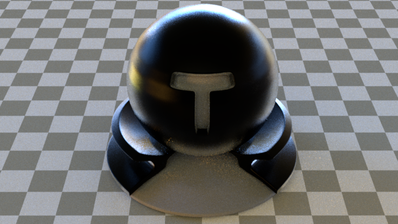
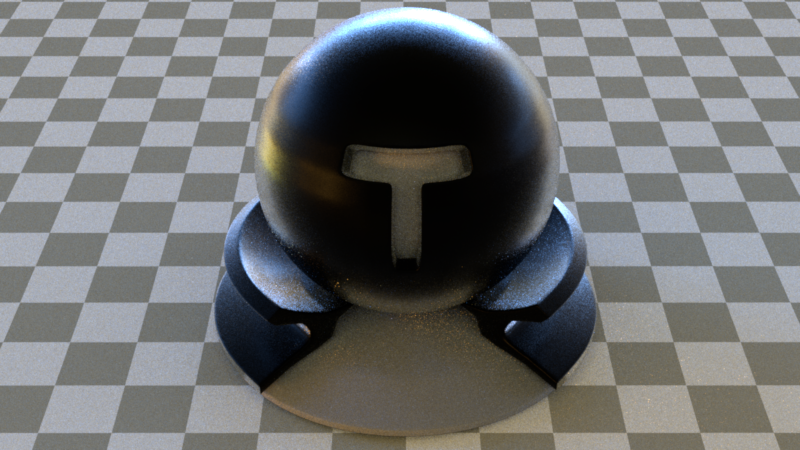
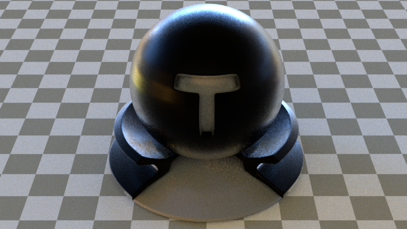
Final Rendering